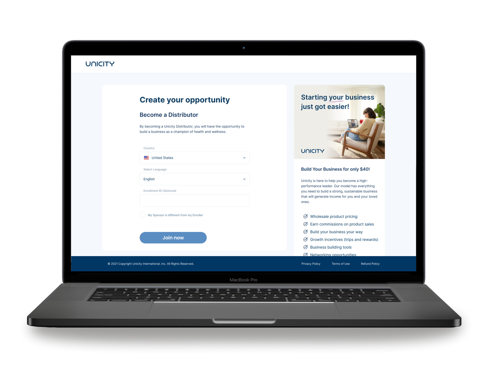
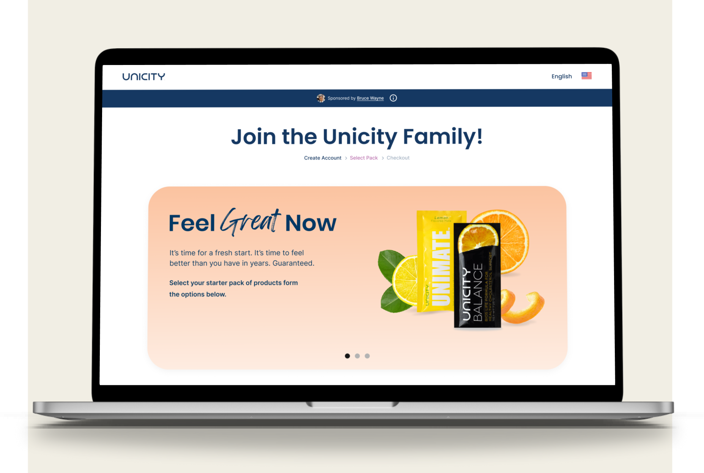
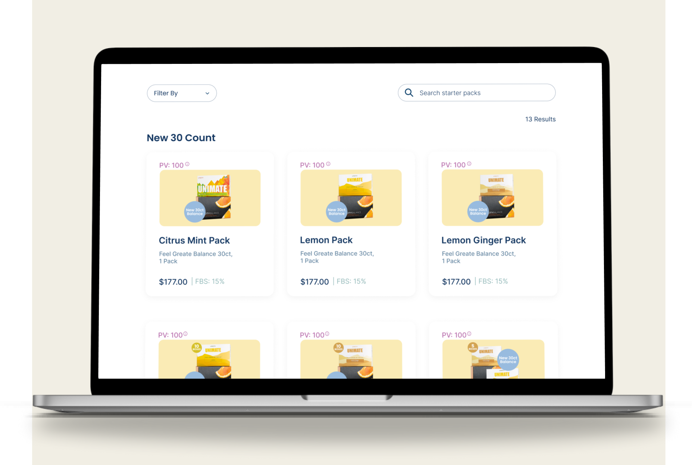
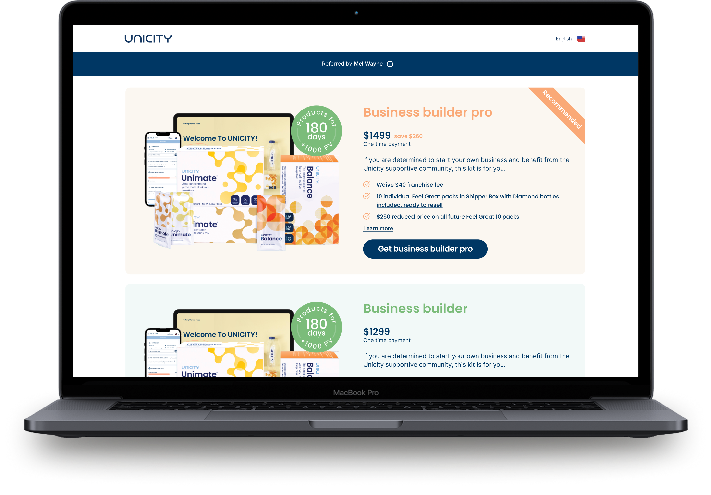
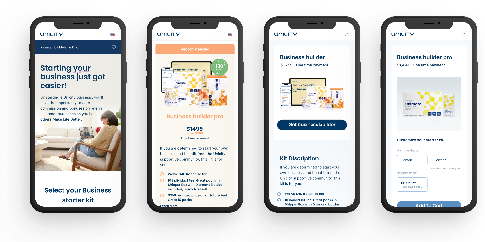
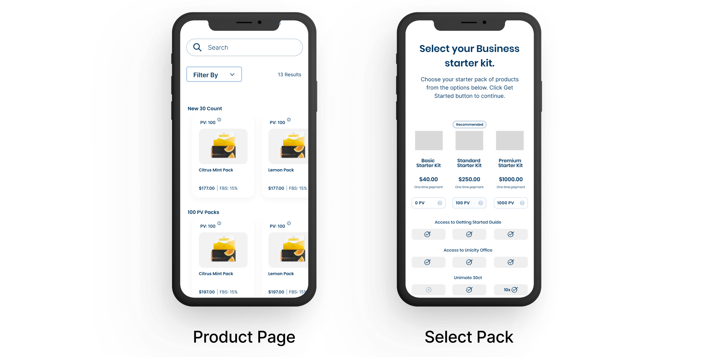
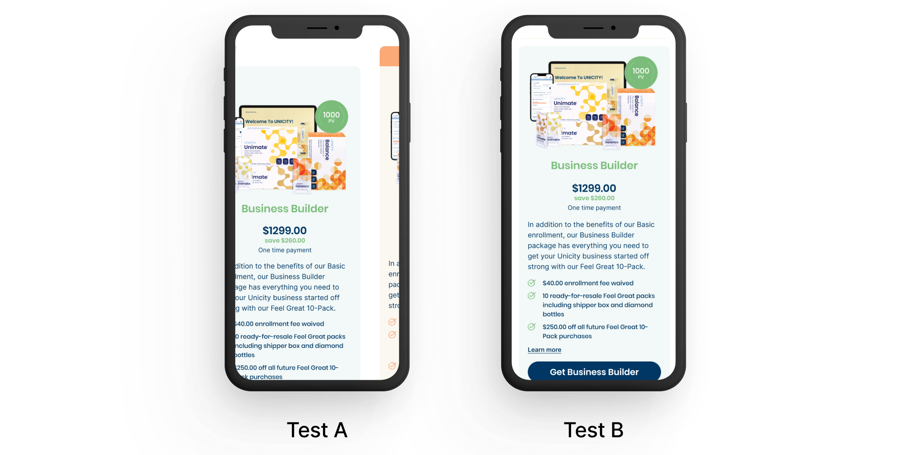

A redesign of Unicity's distributor enrollment process — removing irrelevant steps, introducing mobile support, and reducing drop-off by 46% within one quarter.

Unicity International gives people the opportunity to build their own business by becoming distributors. The enrollment process is the front door — and it was broken. Distributors were asked to complete tasks irrelevant to enrollment, there was no mobile-friendly path, and new distributors without a mentor were abandoning the process entirely.
The existing enrollment flow had an outdated design and was not built with users in mind. The flow required completing tasks irrelevant to enrollment. Unnecessary steps added friction at exactly the wrong moment, and the entire experience was desktop-only focus despite a mobile-first user base.


"How might we simplify the enrollment process so new distributors can complete it confidently — on any device, without a mentor?"
I relied on information architecture principles to rebuild the flow from scratch, stripping irrelevant steps and restructuring the remaining content into a logical sequence. The product selection problem was solved by pitching a starter kit model with my PM: three tiers (Basic $40, Business Builder $1,299, Business Builder Pro $1,499) replacing a full product browse mid-flow. Built mobile-first.

I ran an analysis phase beginning with a stakeholder workshop to identify the most important challenges and confirm we were solving the right problem. Used Heuristic Analysis (NN Group), Behavior Analysis (Hotjar), and kept surfacing one insight: too many unnecessary steps.
With research validated I rebuilt the IA, stripping the flow to only what was essential. I started ideation with paper and pen using a mobile-first approach. Even with the simplified process, the product selection page still felt like a shop — which led to the starter kit solution.

I ran scenario-based usability sessions with distributors — tasks like "sign up a new distributor and assign a sponsor." Results were strongly positive. One key fix: the starter kit layout was hard to read, requiring a redesign before A/B testing.

7 A/B tests with in-house employees and distributors. Version A: vertical stack. Version B: horizontal scroll. 100% of participants completed the task with Version A. Only 42% with Version B. Version A shipped.

Working on an existing product meant I could make precise assumptions and validate them through focused research. The result was a tightly scoped MVP that stayed within the goal. By thinking outside the obvious solution (just clean up the UI), we arrived at a structural change the company could actually support: the starter kit model.
Open to new opportunities — UX Design Lead, Senior Product Designer, and the right team.
Let's Chat